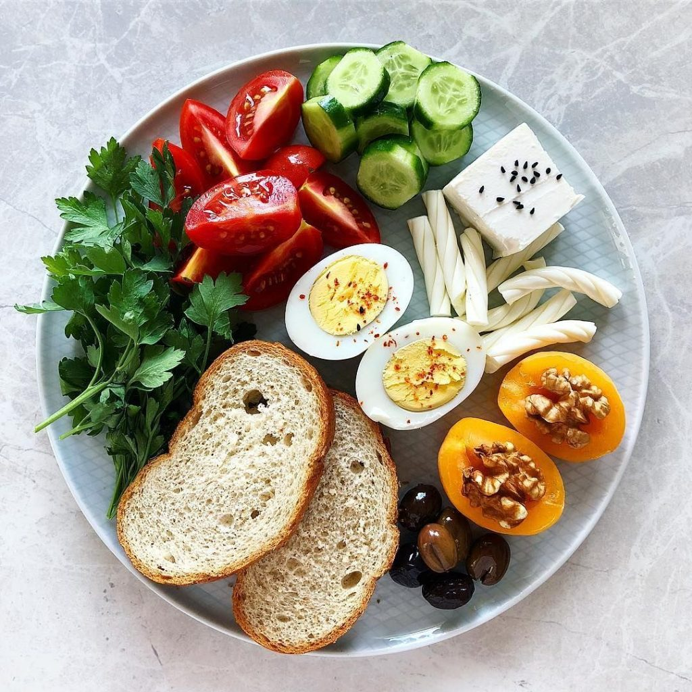
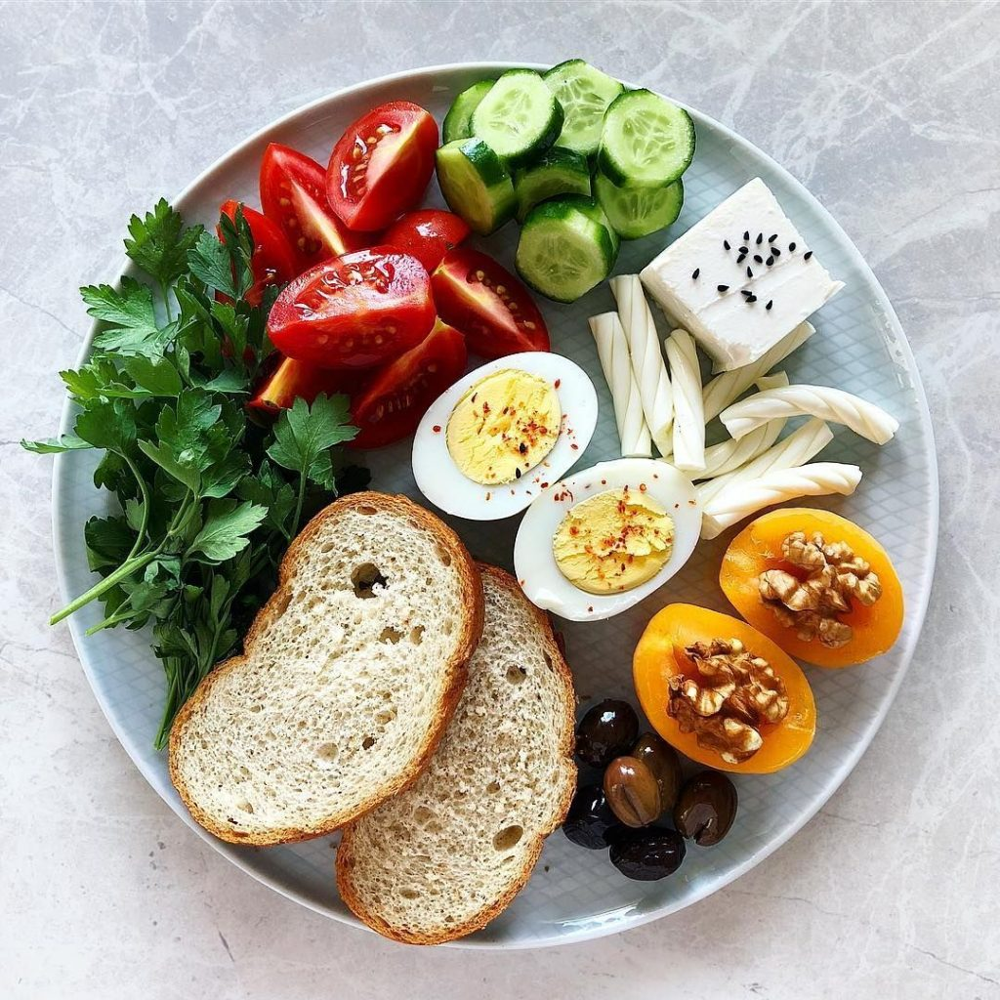

Sağlıklı bir yaşam , dengeli beslenme, düzenli egzersiz ve pozitif düşünceyle başlar.
Aşağıda sizler için hazırlanan görseller, videolar, ve sesli içerikleri inceleyebilrisiniz
Renkli tabaklar, farklı vitaminleri vucudumuza kazandırır. Günde en az 3 porsiyon sebze ve meyve tükilmesi gerekir.
 

Egzersiz beden ve zihin sağlıgını güçlendirir.Kısa yürüyüşler büyük fark yaratabilir.
Sabah motivasyonu için kısa sesli içeriği dinleybilirsiniz.
"Sağlık, her şeyin başıdır. Onu korumak en büyük servettir."